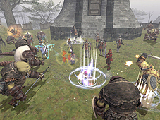
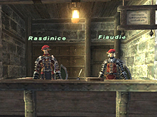
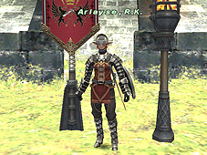
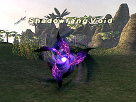
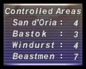
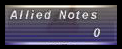
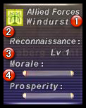
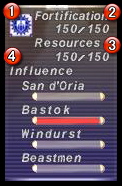
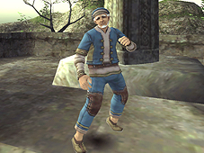

Campaign refers to the drawn-out struggle for land and resources that took place between the Allied Forces of Altana and the Beastman Confederate on the continents of Quon and Mindartia during the Crystal War.
Once per week (Earth time), influence over areas will be calculated, with the results garnering a nation either a Dominant or Minor ranking. For the following week, this will grant players fighting in the area in question either an advantage or disadvantage, respectively. To participate, players are required to be affiliated with any of the three nations aligned under the Allied Forces of Altana: San d’Oria, Bastok, or Windurst. Players will then engage in multifarious battles and operations in an attempt to attain victory for the military they represent.
1. Determining Policy
Tally results from the previous week* are used to determine battle strategies and logistics for the current week.
2. Implementing Strategy
Following predetermined policy, players engage in Campaign battles, Campaign Ops, etc. with the aim of expanding their nation’s territorial holdings. Teleportation services to areas where Campaign battles are underway are available via NPC.
Tactical Assessment
Polling is conducted in each nation concerning the implemented military policy.
Steps 1 and 2 are repeated for a period of one week (Earth time) before moving on to Step 3.
3. Tallying Results
Once per week, the tactical assessment results and completion rates of Campaign missions will be tallied to determine the following week’s battle strategies. Once these strategies are implemented, the cycle returns to Step 1.
* The first week of Campaign will operate under predetermined strategies and policy.
“Campaign battles” refers to those conflicts being waged in the designated areas of certain regions. Ceaselessly contested, it is only by repelling the incessant onslaughts of the Beastman Confederate that the Allied Forces of Altana can hope to lay claim to these lands once and for all. By being issued “Allied Tags” by Campaign Arbiters, players may opt to have their battle performances assessed, in return for which they may be rewarded with experience points and “Allied Notes,” a form of Campaign points. In addition, players felled in Campaign battles will suffer no loss of experience.
*Allied Tags may be acquired whenever the wartime icon is displayed before the name of the Campaign Arbiter.
Flow of Campaign Battle
1) Player travels to area where Campaign battle is underway.
↓
2) Player has “Allied Tags” issued by Campaign Arbiter.
↓
3) Player engages in various acts, such as besting Campaign-related monsters.
↓
4) Player has performance assessed by Campaign Arbiter. Collects reward (experience points/Allied Notes) when applicable.
*Any Allied Tags and temporary items a player has will be handed in to the Campaign Arbiter at the time of performance assessment.

Lesser in scope than the large battles waged over the control of lands, Campaign Ops refer to those special operations that afford players the opportunity to engage in a plethora of war-related efforts, including troop reinforcement, supply runs, escorts, reconnaissance, espionage, and small-scale skirmishes. The Campaign Ops available for participation will vary depending on factors such as regional influence and war conditions. Most importantly, the war effort of the Allied Forces of Altana stands to benefit greatly from the successful completion of such endeavors. Campaign Ops may be undertaken by speaking to the appropriate NPC in any of the three nations.
*Players may also assist in the Campaign Ops of other nations. Successful completion of such an operation will yield experience points, beginning at level ten, as well as evaluation points. Players below level ten will be unable to gain experience points.
The forces of Altana and those of the beastmen are relentlessly vying for influence over the areas of Vana’diel. Indeed, the very state of their fortifications and armaments is dependent upon the number of areas under their control. Both sides enjoy the perks of area control in the same manner, with the greater the number of territories resulting in more powerful benefits for the troops. Each area contains certain NPCs who will teleport a player to the stronghold of the army with which they are affiliated, at the cost of a few Allied Notes. In any given week, should the Beastman Confederate gain control over an area neighboring any of the allied nations, the beastmen will not hesitate to sack the city itself.
*The number of Allied Notes required to use the teleportation feature in uncontrolled areas will be more greater than in controlled areas.
*The points in each area flying the flag of the nation currently in control are called “strongholds.”
*The gates in each area positioned near the entrance and exit points are called “checkpoints.”

For adventurers entering into a contractual agreement with the Allied Forces, “Allied Tags” will become available from Campaign Arbiters. While in possession of an Allied Tag, defeating monsters in Campaign battles will earn a player Allied Notes, as well as guarantee that a player will not lose experience points even if they are defeated. Defeating enemies will not yield experience points, item drops, or skill-ups. During the time that a player has Allied Tags issued up until their performance assessment at the hands of the Campaign Arbiter, the character’s name will be preceded by a sword icon to denote their Campaign participation.
*From the moment a player acquires Allied Tags from a Campaign Arbiter in an area where a Campaign battle is underway, a wartime icon in the shape of a sword will appear onscreen before the player’s name. The icon will remain throughout the duration of the player’s evaluation.
*Allied Tags will be lost should a player change areas.
*The same wartime icon used to denote Campaign status will be used for Campaign Arbiters as well.

・ Campaign Battle Monsters
Enemies in Campaign will also be distinguished by the presence of the wartime icon preceding their names onscreen. These monsters can be engaged by any players on Campaign, regardless of party or alliance orientation. Defeating them will not yield experience points, items, or crystals.
The military of each nation under the Allied Forces of Altana may receive what are known as Campaign “medals.”
○Evaluations
While donning a medal, the merit of a player’s performance will be judged by that nation’s Campaign Evaluation Official. These officials will take the following points into consideration when doling out their evaluations:
・Individual conduct in Campaign battle
・Campaign Ops achievements (including the assistance of other PCs)
*In both cases, the better a Campaign result is or the more difficult it is to obtain, the greater a player’s evaluation will be.
○Benefits of Medals
Amassing medals will grant a player ever-increasing prestige amongst the forces of the army with which they are affiliated. In addition, higher-level Campaign Ops will be made available, and the player’s voice will come to carry more weight when carrying out tactical assessments.
○Undergoing a Campaign Evaluation
Campaign evaluations are possible only 120 hours, 5 days, (Earth time) after either army enlistment, transfer, or since the player’s last evaluation.
○Conferment and revocation of medals
Campaign Evaluation Officers are authorized to hand down the following three judgments:
・Promotion (rank up)
The player will be bestowed an additional medal. The evaluation record will be reset.
・Status quo
The player’s current rank remains the most befitting. The player’s evaluation score will be reset.
・Demotion (rank down)
Due to not generating a satisfactory evaluation, the player will be stripped of one rank. Upon being demoted, the player’s evaluation score will be halved.
○Validity of Medals
Every medal is imbued with a magic that determines its period of validity. This term is set at thirty days (Earth time), after which point Campaign services dependent on that medal’s validity will become inaccessible.
○Renewal of Medals
To renew a medal’s validity players must consult the Campaign Evaluation Officer in their nation of affiliation, who will consult them on how to proceed.
For adventurers entering into a pact of service with the Allied Forces, the Sigil effect may be acquired by speaking with an Allied Officer. A variety of beneficial effects may be added to the Sigil at the cost of some Allied Notes to the player. There are some instances where defeating a monster while bestowed with Sigil will result in the dropping of crystals.
*The effects of Sigil will be limited to the new areas introduced in the Wings of the Goddess expansion. Signet and Sanction effects will not apply to these areas.
*While the Signet effects are restricted to the old areas, the benefits of Sanction will only take effect in the areas introduced in the Treasures of Aht Urhgan expansion.
*Players may only have one of the following effects at a time: Sigil, Sanction, Signet. Please take note of which you are endowed with when moving between old and new areas.
*A player may be in possession of both Sigil and Allied Tags simultaneously.
Naturally, the Kingdom of San d’Oria, the Republic of Bastok, and the Federation of Windurst each have their own unique military policy when it comes to such matters as strategy and reinforcement. These policies are determined and put into practice in accordance with the military aims of each nation for that week, and are apt to change based upon the battle results, influence over areas, and PC actions and assessments from the previous week.
The actions and conduct of players in the past will come to have a direct role in influencing the trajectory that Vana’diel takes into the present. One such example is the dispersal patterns of monsters and beasts.
Region Information
Players may view the current war conditions by accessing the “Campaign” menu option, which can be found under the “Region Info” section of the main menu.
*There may be a time discrepancy of several hours between the actual current war conditions and those displayed under the Region Info menu.

○Basic Information
Placing the cursor over the Duchy of Jeuno or anywhere other than a region icon will display the following basic information:

○Basic Information
Placing the cursor over the Duchy of Jeuno or anywhere other than a region icon will display the following basic information:
Allied Notes: Displays the number of Allied Notes, a form of Campaign points, you currently possess.

○Stronghold Details
Placing the cursor over any stronghold will display the following detailed information:
(1) Shows the name and icon of the force controlling the stronghold.
(2) Reconnaissance: Shows the current reconnaissance level of the stronghold. The higher the reconnaissance, the more information the battle conditions NPC will provide.
(3) Morale: Graphical representation of the stronghold’s current morale. The higher the morale, the more formidable troops will become on the battlefield.
(4) Prosperity: Graphical representation of the stronghold’s current prosperity. The higher the prosperity, the more Campaign funds a nation will generate. Also, the rate of said nation’s technological and industrial means in Campaign Ops will increase.

○Area Details
Placing the cursor over any of the areas represented by a point on the map will display the following area details.
(1) Dominant Force: The icon of the army with the most influence over an area is displayed.
(2) Fortifications: Numerical representation of an area’s defenses. This rating is influenced by factors such as the number of soldiers participating in that area’s battles, etc.
(3) Resources: Numerical representation of an area’s resources. This rating is influenced by such factors as the number of temporary items available.
(4) Influence: Graphical representations of each of the three nations’ influence over an area, as well as the Beastman Confederate’s.
War Conditions
Speaking to specific NPCs in the city areas will allow a player to view current military policy in place.
National Influence / Battle Strategies 1, 2 / Internal Policies 1, 2
In each nation, tactical assessments of military policy may be conducted. By speaking to the appropriate NPC (curate in San d’Oria, supply commander in Bastok, or ｍorale manager in Windurst) players may participate in such an assessment on any of three categories: leaders, battle strategies, and internal policies.
The tallied results of all assessments will be calculated in Campaign totals, and after taking into the consideration the opinions of the nation’s elite, will be reflected in the policy decision-making of the following week. Players affiliated with an army have the right to participate in that force’s tactical assessments once per week.
○Tactical Assessment Categories
Leaders
Assess the views of a nation’s leaders and side with those of your choice.
Battle Strategies
Assess the battle strategies of a nation’s forces.
Internal Policies
Assess the internal policies of a nation’s forces.

In every area, players may encounter NPCs who have no ties to any allied nation. Such NPCs are called “freelances.” Players may convince these freelances to enlist in the Campaign effort, at which point they will ally themselves with the player’s army for a period of one week (Earth time), during which time they will engage in Campaign battles.
Recruiting freelances for your army in such a manner will have certain beneficial effects, as well as direct advantages for your army. Also, there are some freelances who will rally their own troops and participate in battle as a unit.